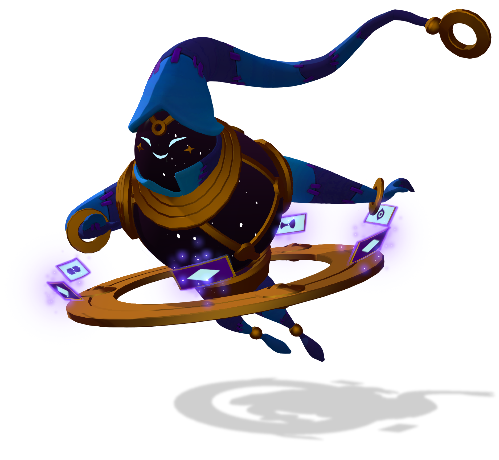

Scroll down to find out more about Oru!

A brief summary on Oru:
- Oru's unique playstyle revolves around his ability to combo between his skills – dealing high damage while also providing utility to the team in the form of crowd control or peeling away in a fight.
- Oru is a bit more complicated to understand then most characters, but once you know what each his abilities does, Oru is quite easy to grasp.
- Oru's character is revolved around a jester with magic ability so as you would expect, his loadout is full of cards.
- Oru's main ability is "Judgement" which throws a card and inflicts 'burning' on the enemy.
- He can keep throwing "Judgement" cards and as they stack up he can also throw in his "Cosmic Power" ability.
- "Cosmic Power" reveals cards on enemy and inflicts a staggering +250 damage to the enemy.
- If the have "The Beast" when "Cosmic Power" is used, they also get 'daze' for one second.'
- "The Beast" is a spread of three cards thrown, and when inflicted they 'slow' then enemy and can also 'bleed' the enemy if upgraded that way.
- Oru's last, but not least ability is "The Joker" which places three cards beside your feet as a trap.
- When enemies try to pass the cards, the are inflicted 150 damage and are 'pushed' away, and this can be upgraded, if desired, to be able to place cards farther away.
- Oru is a really fun character you can play in Gigantic, and if wielded correctly, you can be an unstoppable force.
- Oru, at first glance, may strike as a mystic character and may be mistaken as a low damage character, but do not be mistaken.
- Oru is a wielder of deadly cards that can stack on the enemy and "Cosmic Power" can inflict a stunning punch to the enemy.
- Be careful when Oru is on the field, because he is a very tricky character and has the ability to strategically turn the tables around in any game.
- Just as any other character in Gigantic, Oru is a unique and diverse character, and shouldn't be shunned away in place of others.
- "Oracular knowledge could make even the most universally important event dull; Oru sought excitement in the small, unseen moments."
Links
We'll see you on the airship!!